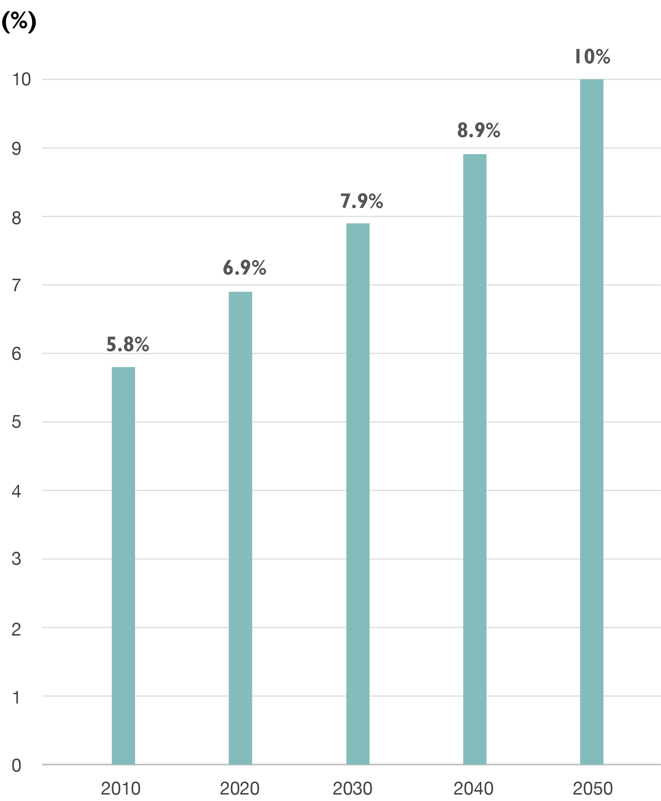
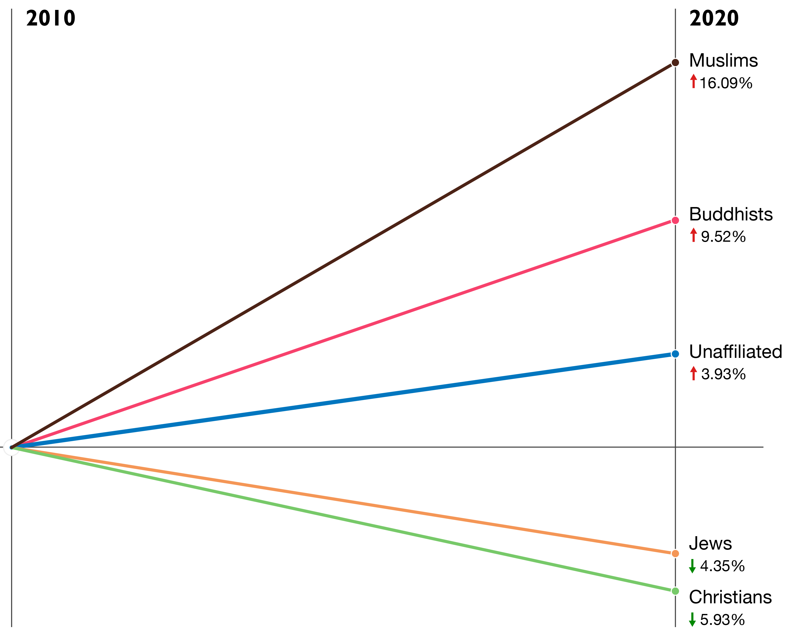
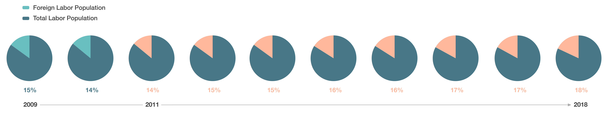

By Massimo Sestini | The Italian Coastguard
Germany’s history with immigration runs deep, and the public’s opinion of ‘outsiders’ shifts over the decades. In recent years, the Meditteranean has been abuzz since the immigration crisis in 2015, and countries across the globe are still in the midst of legislative and social reform to address the issue.Germany has been steadily progressing over the years, despite political tensions. The country has been a host for many Muslim refugees, for over a century, and the growth of Islamic cultural impact withinin the country has been exponentially growing.
The PEW Research Center shows that, in just one decade, the population of Muslims increased from 4.76 million in 2010, to a projected 5.53 million people in 2020 - a 16% increase. Which is the greatest margin of percent change compared to all other religions, and the growing projection of Muslims in Germany can be displayed in a variety of charts, by overall population growth and the population growth rate in religious identities.
Overall population growth of Muslims in Germany
The population growth rate of religious groups in Germany
Lots of Syrian refugees have entered Germany to seek asylum or refugee status since the Syrian Civil War, starting in 2011. After they received the right to reside in Germany, they started a new life there — making a living and embedding Islamic culture. From 2011 through 2016, according to PEW research 86% of the 670,000 refugees accepted by Germany were Muslim. It was during the immigrant crisis in 2015 that, as displayed on the bump chart, a sudden influx of Syrian refugees greatly contributed to the rise of Muslim population in Germany.
Migrants from the Mediterranean countries to Germany
Germany glaring past regarding the religion of Islam is one of appropriation and opression. What is considered to be the first German Mosque, on the grounds of Schwetzingen Palace built in 1779 was never utilized as a place of worship, but rather an architectural monument built by a French designer. The longest-standing place of Islamic worship, the Wünsdorf Mosque was built in 1915 as a part of a German facility for prisoners of war, and held up to 5,000 Muslims who had fought for the Allies against Germany in World War II.
Germany was formally divided into the East and West fractions from 1945 until 1990. To rebuild from economic devastation of World War II, West Germany welcomed “guest workers” to fill the employment gaps, including laborers from Turkey in 1961. The Islam culture from Turkey and other countries henceforth settled more prominantly in the West, as historically East Germany was more xenophobic and their immigrant demographics greatly differed.
The divide between East and West Germany is marked by a bold line on the Google map provided below. Cultural developments being established today, such as Mosques and Halal restaurants, indicate the history of Muslims being more integrated in West Germany, and so continue many generations later.
East Germany and West Germany, 1945-1989 | GEOATLAS.com ® 2004 © Graphi-Ogre
The trend for immigration into Germany continued into the modern era, with military coups and political unrest in Turkey, Iran, and Lebanon through the 70’s and 80’s significantly increased the number of Muslim persons entering the country under asylum. In 1980 , Germany had approved over 100,000 refugee applicants in just one year - a staggering record.
It is estimated that over 5.53 million persons in Germany will be practicing Islam by 2020. Mosque construction has exponentially increased across the decades, growing from mere handfuls in the early twentieth century, to dozens per year. The interactive Google Map shows the construction of Mosques significantly increased, starting with the 1990’s as tensions in the Middle East rose with international conflict.
While the labor population in Germany has been steadily increasing overall, according to EuroStat data displayed on the pie charts provided, the largest growth occurs in the foreign-born laborers. Since 2011, the steady incline in foreign-born labor has had the greater percent increase from the years preceding compared to the overall population. This includes Muslim immigrants, which further solidifies their presence in the country.
Labor Status Population in Germany
As previous generations have settled in Germany, new generations continue to integrate. Their advantage is the pre-established immigrant labor groups. Muslim families who run businesses and restaurants, or have family members working in the country and even seeking college degrees, provide a network for newly-arrived immigrants that enable the expansion of their culture and practices in Germany.
Halal is essentially the Muslim equivalent to the Jewish practice of Kosher, in which food is prepared acording to a specific religious doctrine in Islam. The abundance of Halal restaurants is a significant indication of the expanse of the Muslim-immigrant culture. The global Muslim information website Zabihah provides numerous counts of Halal restaurants. In Berlin alone, there are 314 Halal restaurants; in North-Rhine Westphalia there are 226 Halal restaurants; and a handful of other city-provinces with significant numbers, including over 100 restaurants present in both Bavaria and Baden-Wüttemburg.
As of 2018, over 40 Mosques have been established in Germany since the turn of the century. Less than so many Mosques even existed up through the year 1999 - a mere 22 formally established Islamic places of worship. This increase due to immigration can be followed in a simple chronological count of Mosques established in each decade.
Also included in the map are grey markers indicating the numerous Mosques listed in the global online database “Salatomatic” which lists “Mosques and Islamic schools.” Most Mosques began to be added in 2006, as the year indicated on the information pop-up is that of the website’s integration into the database system. The presence of Mosques in the major cities demonstrates the impact of the Islamic religion on the important cultural and political regions in Germany: Berlin, North-Rhine Westphalia, Baden-Württemberg, and Hesse.
Both the shaded overlay of high-density Halal restaurants by city, and the geographic points of the most prominent Mosques, is visualized in an interactive Google map, where each decade can be displayed seperately to present the difference in Muslim presence according to Mosque construction.
Though the history of immigration into Germany is apparent, there are current political and cultural forces which continue the attraction of Muslims into the country. The Mediterranean sea can be seen as “the entrance to Europe” for many countries undergoing political turmoil and causing mass immigrations.Germany is easily accessible through Meditteranean countries, as well as upholding a progressive immigration legislation.
A large volume of applications for asylum continue to arrive in Germany, most of which are from Turkey. As depicted on the bump-chart, the Islamic country of Syria’s increase in recent years due the crisis has contributed significantly to the overall intake of Muslim immigrants. The number of immigrants from most of the Mediterranean countries has kept a steady fluctuation since 1990, while there is a dramatic increase in the number of Syrian immigrants from 2015 to 2019.
Opportunities available in Germany over others, simply due to the country’s history in favor of immigration. The right to asylum has been codified in the German Constitution since World War II, which is not common in other nearby Medditeranean countries, and is continuously being updated and maintained.
Not all sentiment for immigration within Germany has been welcoming. In 2014, as tensions with immigrants were building before the crisis burst, the Patriotic Europeans Against The Islamisation of the Occident - “Pegida” for short - was formed as a “voluntary association” in Germany. The group was established for the main purpose of expressing anti-Islamic sentiments, and advancing their far-right nationalist politics. A recent report found that there were 813 Islamophobic crimes counted in Germany in 2018. Even though that’s a slight fall from the number of attacks recorded in 2017 — 950 cases — many see that number as conservative because a lot of "run-of-the-mill attacks, insults and discrimination are not even recorded," said Ulla Jelpke, the Left party's domestic affairs spokesperson in the Bundestag.
A mosque after an arson attack in Germany | @picture-alliance/dpa/P.Zinken
Beyond public groups, there have been anti-immigrant legislators and politicians holding important office positions for Germany, providing validation for public opinions against Muslim immigrants. Horst Seehofer is the current Minister of Germany’s Interior, Building & Community at the cabinet level. Much of his anti-immigrant sentiment became popular during the time of the immigrant crisis, when he resided as Minister-President of the German state of Bavaria, but Seehofer’s anti-immigration and anti-Muslim sentiments and policies are present throughout his political career.
Issues with public safety and full integration into German citizenry continue to be a challenge. In August 2018, during a festival celebrating the founding the German city of Chemnitz, a Cuban-German man was killed in a fight. While it seems multiple people were involved, only two Iranian men were named as suspects. This incident inflamed the immigration issues in Germany, and exploded into protests and riots against immigration in Chemnitz.
Yet, opposing political views and citizen protests do not entirely deter progress for immigrants. German states have begun to adopt Islamic as an official religion , which entitles students to be excused from school for religious practices, or for a Muslim adult to request time-off from work with a legally protected reason. This legislation could also help to ensure legal protection from authorities, for Mosques and Muslim-dominated neightborhoods within these states. This German legislation in favor of Islam does not only affect the religious practice; but advances the validity of one’s cultural identity.
Chancellor Angela Merkel continues to flagship Germany’s progressive moves in regards to immigration. In 2018, the first “Anker” migration transit center was opened in Bavaria. Though the center received criticism from Seehofer and his constituents, Chancellor Merkel continues to hold strong to her motto: “we can do this.” Not just as a country providing aid, but as a nation striving to develop relations with immigrants, as Germany reinforces its own economic infrastructure and cultural diversity.